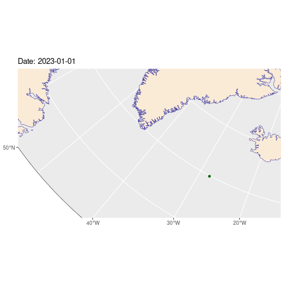

Want to see the code? Click on the black boxes on the right to show/hide the code.
This is an extension of yesterday’s map - this time we’re going to show how one of the buoys moved over the course of the year.
#First, we'll need to load a bunch of libraries so we can handle and view geospatial data
library(sf)
library(dplyr)
library(ggplot2)
library(gganimate)
library(terra)
# Open the raw data file and add a couple of columns to make it easier to work with
# We're just interested in one date per day, so we'll remove any duplicates
buoysRaw <- read.csv('./data/11/LEVEL1_2023.csv')
buoysRaw$id = as.character(buoysRaw$BuoyID)
buoysRaw$dt = as.POSIXct(sprintf("2023-%d-%d 00:00:00", buoysRaw$Month, buoysRaw$Day), format="%Y-%m-%d %H:%M:%S", tz="UTC")
# Filter the data to just the buoy we're interested in and convert it to a spatial object
buoys <- buoysRaw[buoysRaw$id=="300234067976260" ,] %>%
st_as_sf(coords = c("Lon", "Lat"), crs = 4326) %>%
st_transform(crs=3995)
# Remove any duplicate dates
buoys <- buoys[!duplicated(buoys$dt),]
# Load the world borders shapefile and crop it to the area we're interested in
wrld_simpl <- st_read('./data/11/TM_WORLD_BORDERS-0.2.shp', quiet = TRUE)
box = c(xmin = -180, ymin = 45, xmax = 180, ymax = 90)
sf::sf_use_s2(FALSE)
a = st_crop(wrld_simpl, box)
sf::sf_use_s2(TRUE)
# Convert it to the same projection as the buoy data
w_sf <- a %>%
st_as_sf(coords = c("long", "lat"), crs = 4326) %>%
st_transform(st_crs(3995))
# Create a border and frame for the map to make it look nice
border <- cbind(x = 0:360, y = rep(50, 361)) %>% st_linestring() %>%
st_sfc(crs = 4326) %>% st_transform(st_crs(3995))
frame <- list(cbind(x = c(0:360, 360:0, 0), y = c(rep(50, 361), c(rep(0,361)), 50))) %>% st_polygon %>%
st_sfc(crs = 4326) %>% st_transform(st_crs(3995)) Here’s a map showing the locations of buoy 300234067976260.
# Centre the map on the bounds of the points and
# add a bit of padding so the points aren't right on the edge
width = ext(buoys)$xmax - ext(buoys)$xmin
height = ext(buoys)$ymax - ext(buoys)$ymin
width = max(width,height)
xmin = ext(buoys)$xmin - (width*0.3)
xmax = ext(buoys)$xmax + (width*0.3)
ymin = ext(buoys)$ymin - (height*0.3)
ymax = ext(buoys)$ymax + (height*0.3)
# Create the map by adding the borders, the world map, the frame and the buoy data
p <- ggplot() +
geom_sf(data = border, col="darkgrey") +
geom_sf(data = w_sf, fill= "antiquewhite", color="darkblue")+
geom_sf(data = frame, col="black", fill="white") +
geom_sf(data = buoys, color="darkgreen") +
coord_sf(xlim = c(xmin, xmax), ylim = c(ymin, ymax), crs = sf::st_crs("EPSG:3995")) +
transition_time(buoys$dt) + labs(title = "Date: {frame_time}") + shadow_wake(0.05, size = 2, alpha = TRUE, wrap = FALSE, falloff = 'sine-in', exclude_phase = 'enter') +
theme(axis.line = element_blank(),panel.grid.major = element_blank(), panel.grid.minor = element_blank(), panel.border = element_blank(), panel.background = element_rect(fill = "aliceblue"))
# to render the animation you can either output p which will generate a bunch of images that you can convert
# to an animated gif, or you use the animate command, which is slower.
#animate(p + transition_time(buoys$dt) + labs(title = "Year: {frame_time}"), nframes = nrow(buoys))
Buoy data from the International Arctic Buoy Programme (IABP): https://iabp.apl.uw.edu/data.html
Map data from the World Wind Java project: https://github.com/nasa/World-Wind-Java/blob/master/WorldWind/testData/shapefiles/TM_WORLD_BORDERS-0.2Readme.txt